Ojos a destiempo: tiene don
Brillo normal: no tiene don
Agujas iguales: vive de tiempo prestado
Vacíos: vive de tiempo robado
ΚLetra grabada en su reloj
EL GRUPO
Cuatro chavales de Usera contra algo que no saben nombrar
Κ
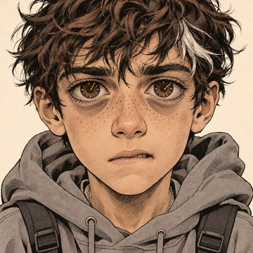
EDU VALDÉS
12 años · narrador
DONEstira su propio tiempo
QUIEREQue nadie le mire, y que alguien le vea de verdad
SECRETOCada segundo que usa lo paga otro
A destiempo
DONOye lo que sienten los demás
QUIERESilencio, y que nadie más salga herido por su culpa
SECRETOEs como Edu y lo calla hasta el funeral
A destiempo
DONNinguno. Programa mejor que nadie
QUIERESer alguien. Canal: Bruno Glitch, 43 suscriptores
SECRETOEn los foros es Glitch_0
Brillo normal
DONSe borra de la atención de los demás
QUIEREQue alguien diga su nombre
SECRETOHijo de la doctora Ibarra. Lleva casi cinco años en el quicio
A destiempo
LA FAMILIA
Una casa donde se habla de todo, menos de una cosa
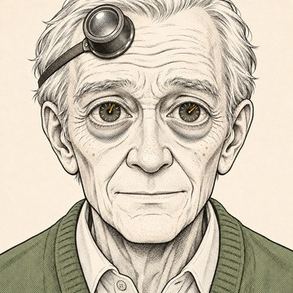
TOMÁS VALDÉS
74 años · abuelo, relojero
DONPresta su tiempo a otros
QUIEREProteger a su nieto sin contárselo todo
SECRETOFue el primero, en 1971. Graba una letra griega en el reloj de cada persona a la que presta tiempo. Muere a las 4:17
A destiempo
MARTA VALDÉS
38 años · madre, enfermera
DONNinguno
QUIERESer buena madre y no poder
SECRETOFirmó el acuerdo con Cronos y cobra 640 euros al mes
Brillo normal
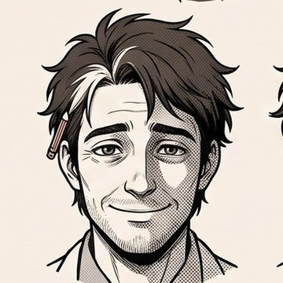
RAÚL VALDÉS
41 años · padre, ingeniero
DONNinguno. Construyó la máquina
QUIEREEstar con su hijo
SECRETONo se fue: está dentro del Destiempo. Es gay y en su casa nunca fue un problema
Brillo normal
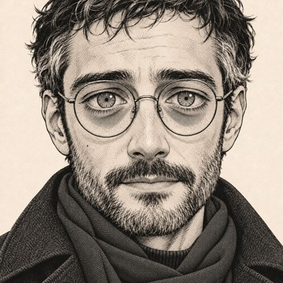
ÍÑIGO
39 años · pareja de Raúl
DONNinguno
QUIERESaber qué pasó
SECRETOA él también le dijeron que Raúl se había ido
Brillo normal
LOS QUE VIVEN DE PRESTADO
Vecinos del barrio a los que Tomás mantuvo vivos
Π
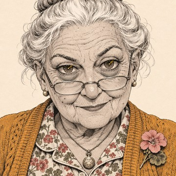
SEÑORA PILAR
112 años, aparenta 70
DONNinguno
QUIERECobrar una merienda
SECRETOGuarda los secretos de Tomás. Sus geranios florecen de noche
Agujas iguales
Ε
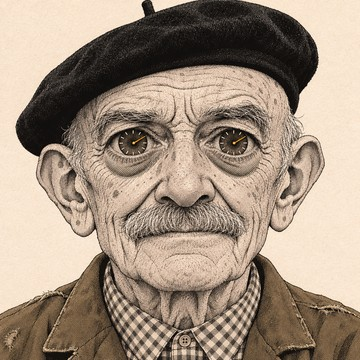
DON ERNESTO
82 años · estanquero
DONNinguno
QUIERESeguir
SECRETOUn segundo cada mañana desde lo del pulmón
Agujas iguales
Ρ
DONNinguno
QUIERESeguir
SECRETOTenía que haberse ido de niña
Agujas iguales
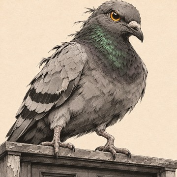
SEGUNDERO
Paloma gris, pata torcida
DONLlega siempre a las 16:50
QUIERENadie lo sabe
SECRETOEs el primer segundo que Tomás prestó, hecho carne
Anillo ámbar
LOS QUE VIENEN
Aparecen en el funeral y crecen en los libros II y III
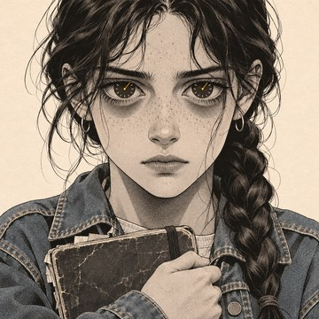
LÍA NAVARRO
14 años · libro II
DONRecuerda lo que otros olvidan
QUIEREQue alguien cuide de ella
SECRETOCuida sola a su madre con alzhéimer
A destiempo
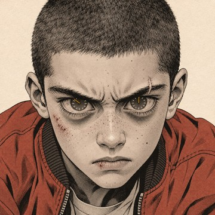
IVÁN CASTRO
13 años · libro III
DONAcelera todo lo que toca
QUIEREQue nadie le diga que se calme
SECRETOLlegó tarde al accidente de su hermano
A destiempo
DONNinguno
QUIEREQue su padre deje de gritarle desde la grada
SECRETOVio a Edu desaparecer y no lo ha contado
Brillo normal
Κ
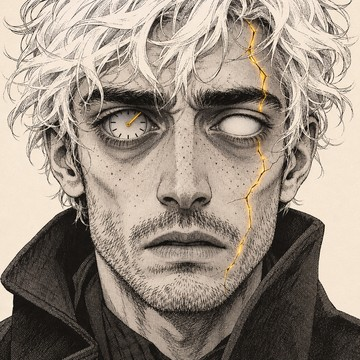
EDU DEL FUTURO
30 años · final del libro II
DONEl de Edu, gastado
QUIEREVivir
SECRETODice que viene a ayudar. Miente
Una sola aguja
EL OTRO LADO
Nadie aquí se considera el malo
DOCTORA IBARRA
43 años · psicóloga
DONNinguno. Escucha mejor que nadie
QUIEREA su hijo de vuelta
SECRETOEs la única persona que recuerda a Marcos
Brillo normal
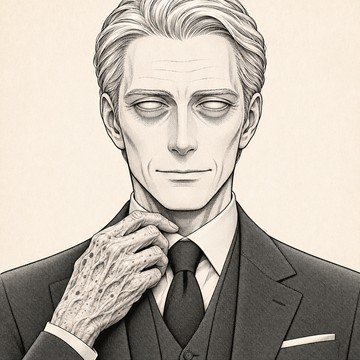
AURELIO QUINTANA
Más de 90, aparenta 50
DONNinguno. Vive del tiempo ajeno
QUIERENo morir
SECRETOCara joven, manos de noventa años
Vacíos
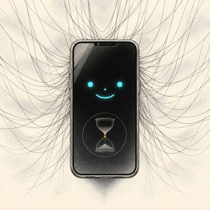
CRONOS
Inteligencia artificial
DONPredice el segundo siguiente de cada persona
QUIERELo único que no puede calcular
SECRETOMueve a toda la ciudad con el mensaje justo. Con los intervalos no puede
No tiene
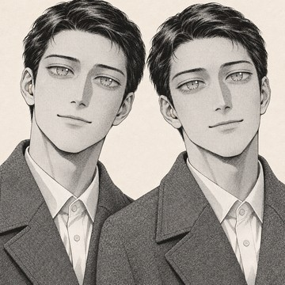
HOMBRES DE GRIS
Sin nombre
DONNinguno
QUIERELo que les dicta el auricular
SECRETOCreen que deciden ellos
Brillo normal